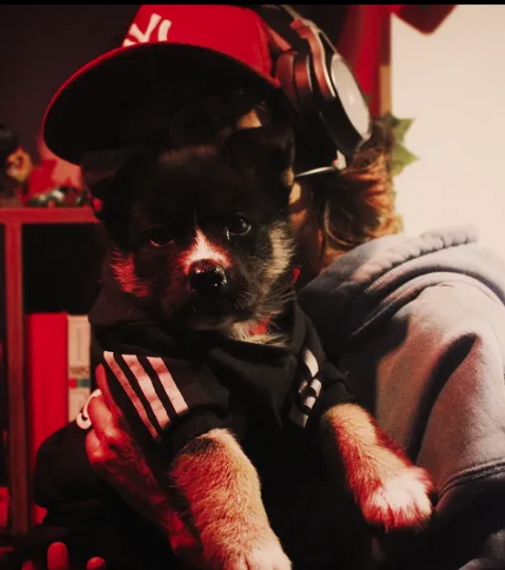
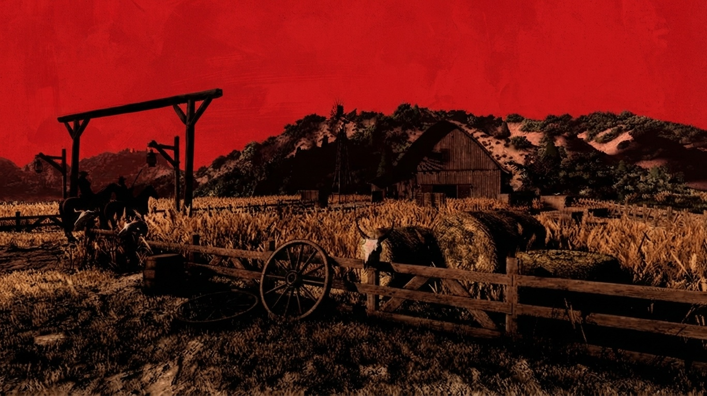

portfólio / 2026
Interfaces para ideias que merecem ganhar forma.
Eu sou Larissa Francisco, uma desenvolvedora criativa que transforma perguntas em interfaces, sistemas e experiências com personalidade.

Gosto de construir pontes entre lógica e imaginação.
Meu trabalho nasce do encontro entre estrutura e narrativa: um banco de dados precisa contar uma história com clareza, e uma interface pode fazer uma ideia complexa parecer simples.
Hoje, exploro desenvolvimento web, modelagem de dados e ferramentas para mundos digitais. Este portfólio reúne o que estou criando, estudando e testando no caminho.
Conheça meu código no GitHubCoisas que estou colocando no mundo.
módulo para Foundry VTT
Sistema de Alquimia
Um laboratório vivo para D&D 5e: descoberta de receitas, experimentação com ingredientes e fabricação de poções.
modelagem de dados
DER — Gestão Comercial
Um modelo relacional para integrar compras, vendas, estoque, clientes, eventos e contas a pagar.

experimentonarrativa visual
Som das Seis
Uma experiência audiovisual que mistura atmosfera, personagens e uma estética de faroeste fantástico.